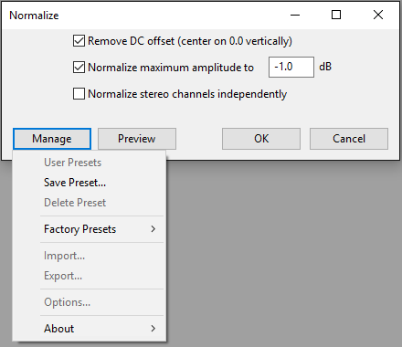

Manage presets
- Accessed by: The or
 button at the bottom left of effects, generators and analyzers dialogs:
button at the bottom left of effects, generators and analyzers dialogs: - 
- Example of the Normalize effect showing the "Manage" dropdown menu
User Presets
Lets you choose from presets that you have already saved in Audacity (see below). In the image above, this option is grayed out because no user presets have yet been saved.
Save Preset...
After you have made adjustments to the settings for the tool, you can use this option to save these settings for later use. When you name the preset you may choose the name of an existing preset and thus update it.
Delete Preset
Deletes any user preset that you may previously have saved. In the image above this option is grayed out because no user presets have yet been saved.
Factory Presets
The "Defaults" Factory Preset lets you reset the effect to default settings. For most built-in effects and all plugins shipped with Audacity, "Defaults" is the only available Factory Preset. Third-party plug-ins may offer multiple named factory presets which you can choose from.
Import...
Imports presets which you have exported using the Export option (below) on this or other machines or which you have exported from other software that supports a compatible preset. Available only for VST and Audio Unit (Mac) effects.
Export...
Exports presets for use in Audacity on other machines or for use in other software that supports import of a compatible preset. Available only for VST and Audio Unit (Mac) effects.
Options...
All plug-ins (except Nyquist) have per-effect options accessed by this menu for one or more of Latency Compensation, Graphical Mode or Buffer Size. If there are no options available (as in the Normalize image above) then this menu item will be grayed out.
About
Selecting "About" from the button displays an information dialog for the tool.
- Type: Indicates whether this is a built-in Audacity tool (as the Normalize example is) otherwise indicates the type of plug-in it is, for example, Nyquist, LADSPA or VST.
- Name: The name of the effect, generator or analyzer.
- Version: Where available, shows the version number of the tool.
- Vendor: Shows who has provided the tool.
- Description: Where available, provides a brief description of the tool's features. For VST effects, normally shows the number of audio inputs and outputs.